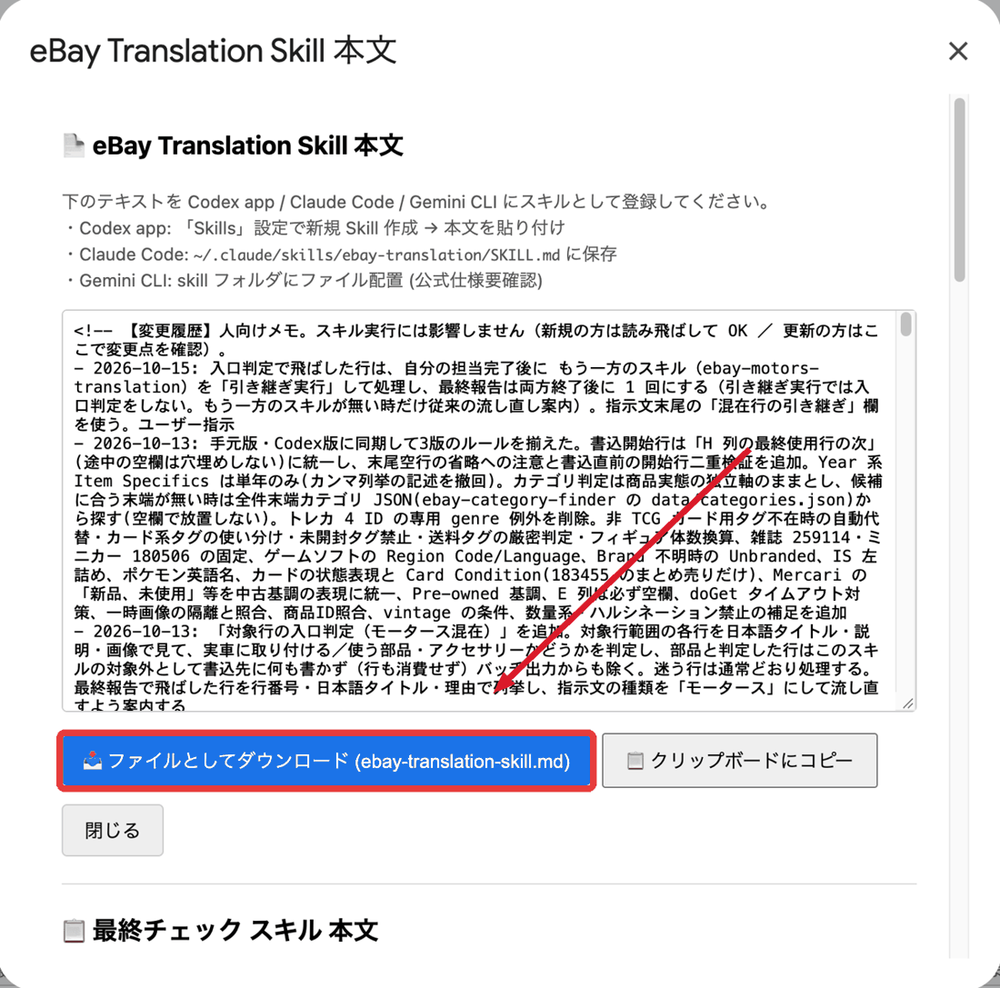
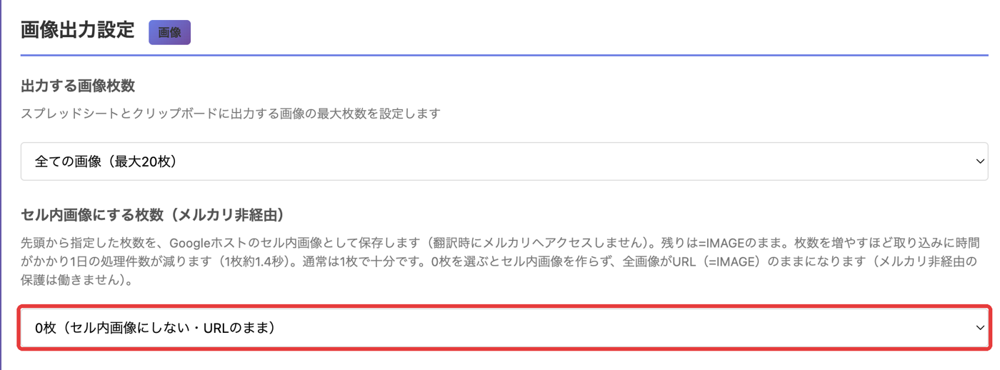

翻訳スキルの更新と、とりこみ君の画像設定
1画面に1つずつ、順番にやれば大丈夫です。
やることは2つです。
① 翻訳スキルを最新にする
② とりこみ君の「セル内画像にする枚数」を0枚にする
シートのメニューを開く
いつも使っているシートを開きます。
上のメニューから、次の順にえらびます。
↓
ファイルをダウンロードする
「eBay Translation Skill 本文」という画面が開きます。
赤い枠の青いボタンをおします。
パソコンの「ダウンロード」フォルダなどに、ファイルが保存されます。

AIにファイルを渡す
いつも翻訳に使っているAI（Codex、Claude、Gemini など）に、ダウンロードしたファイルを渡します。
どちらかを選んでください。
スキルを自分で書き換えていない人
ファイルを渡して、次のように伝えます。
スキルを自分で書き換えている人
ファイルを渡して、次のように伝えます。
自分で書き換えた部分がある場合は、調整もAIに任せてください。
更新できたか確かめる
AIに、次のように聞きます。
「更新しました」と答えれば、できあがりです。
ほかのスキルを使っている方へ
モータース用・最終チェック・再出品のスキルを使っている方は、同じ画面のそれぞれのボタンからファイルをダウンロードし、AIには「ebay-translation」のところを、そのスキルの名前に変えて伝えてください。
- 最終チェック：📥 ダウンロード (final-check-skill.md)
- 再出品取り込み：📥 ダウンロード (relisting-import-skill.md)
- 再出品翻訳：📥 ダウンロード (relisting-translation-skill.md)
- モータース翻訳：📥 ダウンロード (ebay-motors-translation-skill.md)
とりこみ君の設定画面を開く
Chromeの右上にある、とりこみ君のアイコンをおします。
出てきた画面の、次のボタンをおします。
アイコンが見えないときは、右上のパズルのマーク（拡張機能）をおして、「とりこみ君」をえらびます。
「0枚」をえらぶ
設定画面を下へ動かして、「画像出力設定」を探します。
「セル内画像にする枚数（メルカリ非経由）」の欄を、次のものに変えます。

確認の表示が出たらOKをおす
0枚をえらぶと、確認の表示が出ます。次のような文です。
そのまま「OK」をおして大丈夫です。
設定を保存する
画面の下にある、次のボタンをおします。
「設定を保存しました」と出れば、できあがりです。